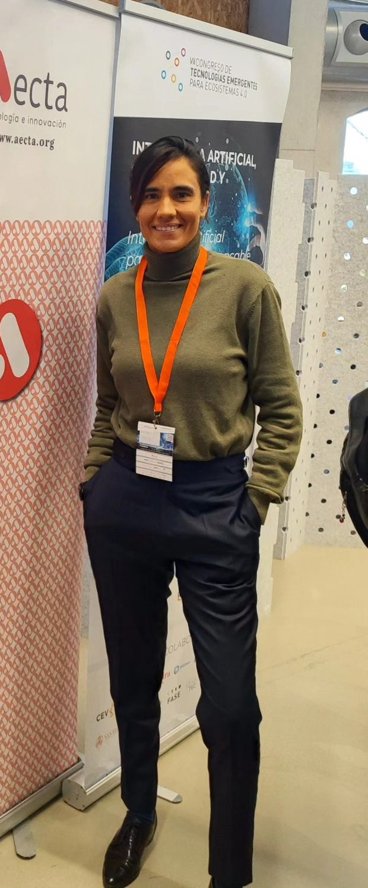
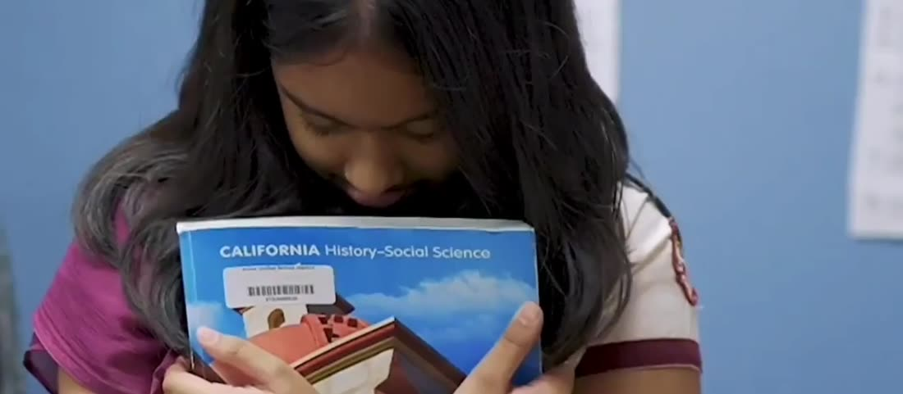
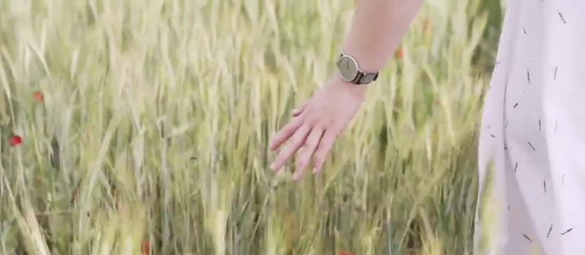
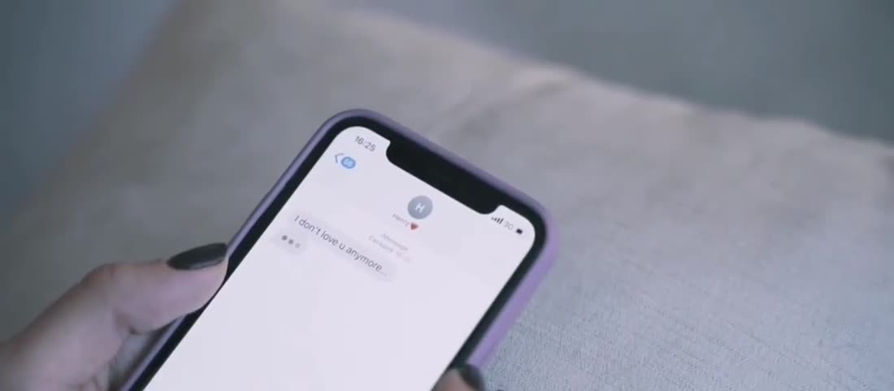
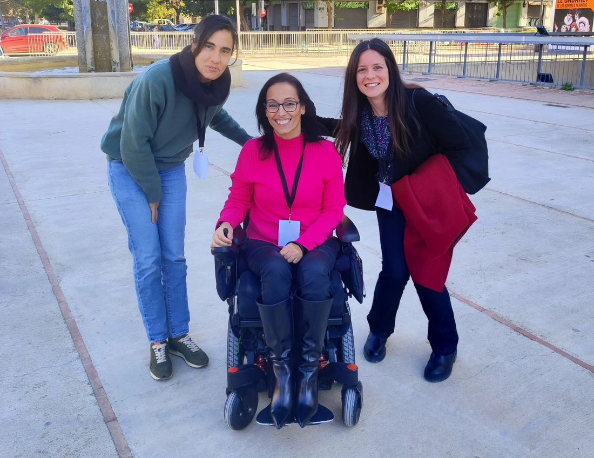
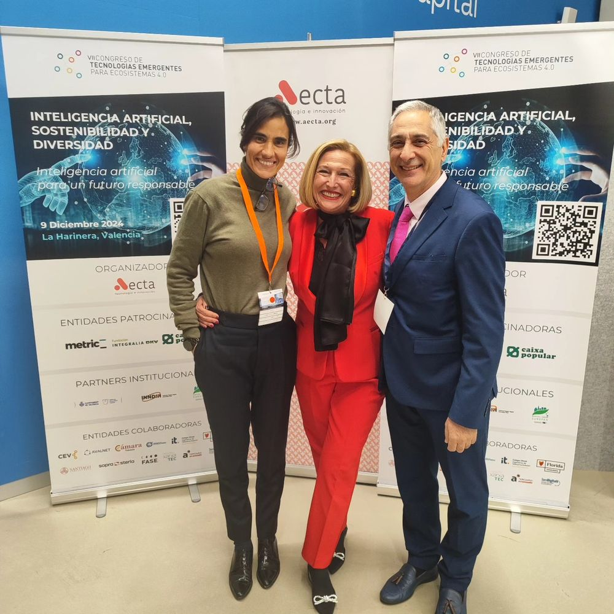

“Laura es una persona maravillosa y tiene con ella un gran equipo. Gracias por cada palabra y cada consejo recibido, sé con quién confiar para lo que necesite.”
RRosa G.Local Guide · Google
Soy Laura Prieto, psicóloga general sanitaria especializada en psicología de la salud. Te acompaño en mi consulta de Benetússer (València) y por videollamada.
“Desde los doce años supe que quería ayudar a las personas. Y sé lo que es pasarlo mal, porque yo también he tenido que aplicarme la psicología a mí misma.”
En este vídeo te cuento quién soy, por qué me dediqué a esto y cómo es trabajar conmigo.
Tu propia llave. Conocerte mejor es el primer paso para vivir de una forma más auténtica.
Desde aquí te acompaño a encontrarla: a buscar tus propias respuestas, aprovechar tu potencial y descubrir tus recursos personales.
“Una nueva forma de vivir más plena”

Llevo más de una década trabajando en psicología de la salud. He acompañado a personas con ansiedad, estrés, rupturas, duelos, crisis personales o miedo a ser juzgadas por quiénes son.
Mi forma de trabajar mezcla rigor profesional con algo que para mí es imprescindible: humor y cariño. Creo que en terapia se puede hablar de lo difícil sin perder la cercanía, y que aprender a comunicarte, poner límites y volver a confiar en ti es posible paso a paso.
Cada persona llega con su historia. Estas son las áreas en las que trabajo, siempre adaptadas a ti.
Ansiedad, estrés, tristeza, autoestima, duelo o momentos de cambio. Un espacio para ordenar lo que sientes y encontrar herramientas que te sirvan.
Pedir citaCuando las discusiones se repiten o cuesta entenderse. Trabajamos la comunicación y lo que cada uno necesita de la relación.
Pedir cita
Emociones, conducta, habilidades sociales y orientación escolar, contando con la familia durante todo el proceso.
Pedir citaCuando el trabajo no te reconoce, te desborda o no te deja desconectar. Aprendemos a gestionar la presión y a poner límites.
Pedir citaUn espacio seguro y sin juicios para personas LGTBI+, para hablar de identidad, relaciones o del miedo a ser juzgado.
Pedir cita
Técnicas de relajación, descanso y rutinas que cuidan tu salud emocional en el día a día.
Pedir cita“Laura es una persona maravillosa y tiene con ella un gran equipo. Gracias por cada palabra y cada consejo recibido, sé con quién confiar para lo que necesite.”
“Había recurrido a terapia psicológica antes, pero nunca me había sentido tan cómodo y había visto tantos progresos en tan poco tiempo como con ella. Es una gran profesional y recomiendo encarecidamente su servicio.”
“Puedo decir que es una especialista cualificada y comprometida con el bienestar de sus pacientes. La consulta online facilita el acceso a las sesiones sin perder la cercanía que caracteriza a Laura y su equipo.”
“Era la primera vez que llevaba a mi hija al psicólogo y me decidí por su gabinete ya que yo antes ya había ido. Toda la familia estamos encantados.”
“Laura es una gran profesional, mi experiencia con ella ha sido muy buena. Atenta, busca cuál es realmente el problema, te ayuda a gestionarlo y te da consejos para que puedas tener las herramientas para superarlo.”
“He llevado a mi hija y desde el primer minuto ha sido inmejorable. Todo lo hace fácil. Sólo tengo palabras de agradecimiento. Recomendable 100%.”
“Llegué a Laura desesperada, necesitaba ayuda para mi hijo. ¡Fue amor a primera vista! Enseguida conectaron. Es una gran profesional.”
“Un trato inigualable por parte de Laura y todo su equipo. Empecé la consulta con Laura hace ya unos años y siempre me ha dado las herramientas necesarias.”
No necesitas saber explicar lo que te pasa. Para eso estoy yo. Solo tienes que dar el primer paso.
Pedir primera citaPor WhatsApp, por teléfono o con el formulario. Solo necesito tu nombre y cómo contactarte.

Me cuentas lo que te trae, te explico cómo trabajo y vemos juntos qué necesitas. En consulta o por videollamada.
Definimos objetivos, la frecuencia de las sesiones y las herramientas que mejor encajan contigo. Y lo revisamos juntos por el camino.
Imparto charlas y formación para empresas, asociaciones y centros educativos. Me gusta colaborar con organizaciones comprometidas con la salud, el bienestar, la igualdad y la educación de calidad.


¿Quieres una charla o un programa de bienestar para tu equipo? Cuéntame qué necesitáis y te preparo una propuesta.
Solicitar informaciónComparto reflexiones, consejos y vídeos sobre emociones, relaciones y bienestar. Sígueme para llevarte un poco de psicología a tu rutina.
Si tienes otra duda, escríbeme y te respondo personalmente.
No. Puedes pedir cita directamente, sin informe ni derivación previa.
Es una conversación para conocernos. Me cuentas lo que quieras compartir, te explico cómo trabajo y vemos juntos si tiene sentido empezar. No tienes que traer nada preparado.
Sí. Como psicóloga sanitaria estoy sujeta al secreto profesional y al código deontológico, y tus datos se tratan según la normativa de protección de datos.
Sí. Las sesiones por videollamada son una buena opción si te cuesta desplazarte o tienes poco tiempo. Solo necesitas un lugar tranquilo y conexión a internet.
Sí. Para empezar necesito el consentimiento de los padres o tutores, y la familia participa durante el proceso.
Te informo de las tarifas cuando me contactes para pedir cita, sin ningún compromiso.
Dar el primer paso es lo más difícil. A partir de ahí, lo hacemos juntas o juntos.
Pedir primera citaEscríbeme por la vía que te resulte más cómoda. Atiendo con cita previa de lunes a viernes, de 8:00 a 22:00.